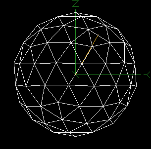

The Animation window provides a way to animate the tube hits of an individual event according to their actual hit times. As an example, the animation below shows a through-going muon from run 15944.
Note: All times are specified in percent (%) of the full range of TAC times for the specific event being viewed. If the data displayed is uncalibrated then raw TAC values are used, otherwise calibrated times are used. The first hit of an event occurs at 0% on this scale, and the last hit occurs at 100%.
The Hit Time slider provides manual control of the current hit time as well as providing a time indicator when an animation is in progress. The time window is applied automatically if not done already when the slider position is changed.
The Time Window specifies the width of the time window for visible hits. A value of 100 causes all tube hits before the current hit time (as specified by the slider position) to be displayed. Smaller widths cause only hits which are closer to the current hit time to be shown. A negative width may be specified, in which case hits after the current time are displayed (instead of before, as with a positive width value). Pressing return in this field causes the current time window to be applied.
The Apply Window checkbox allows the time window to be turned on
and off. When on, only hits within the specified time window are displayed.

Start Time specifies the starting time for the animation sequence. This is a floating point number between 0 and 100.
End Time specifies the ending time for the animation sequence.
Number of Frames gives the number of frames for the animation. The actual number of frames generated is one greater than this value to allow the time interval to be evenly divided with a frame at each end.
Delay is the delay time in seconds between frames. If an animated gif is created, this delay time is written into the file, otherwise it it used as a wait time between the generated images.
If Write Animated GIF is checked, then the specified animated gif output file is written to disk. The animation is generated from the images in the main window. Internally, individual frames are written as .bmp files which are deleted after they are used to create the animated gif file.
The Animate button causes the animation to begin. This causes the slider to move automatically through the specified range of hit times, and writes an animated gif output file if selected.
Clicking on Done dismisses this window, and causes all hits in the current event to be displayed.
Note: Currently, the settings in this window are not persistent, and will revert back to the defaults if the window is closed.